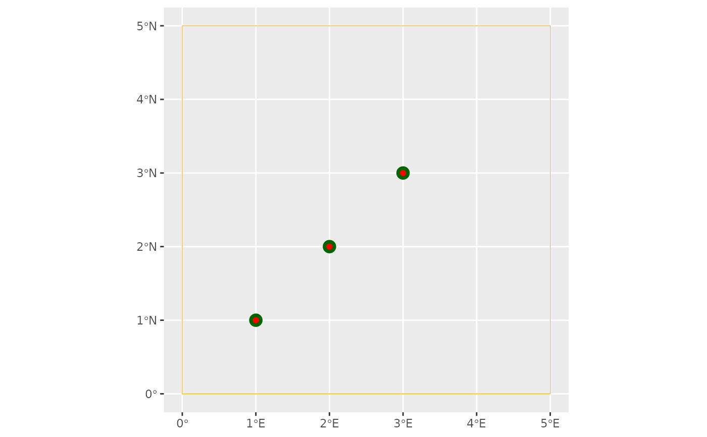

Helper function to define the model configuration of the IMB. It constructs
instances of <ModelConfig> objects.
Arguments
- movement_type
Character string, specifying the movement model to simulate agent trajectories. Currently supported options:
"di": Density-informed movement, where agent destinations stochastically generated based on population-level density maps."crw": Correlated Random Walk model, where movement directions follow probability distributions that can be conditioned by habitat, environmental and/or physiological factors.
- n_agents
Integer, the number of agents to track within the simulation.
- ref_sys
Object of class <
crs>, defining the Coordinate Reference System to be applied to the IBM. Must be specified viasf::st_crs().- aoc_bbx
Numeric vector or object of class <
bbox>, specifying the area of calculation (AOC), i.e. the spatial bounding box within which simulation occurs. If numeric, expects a 4-length vector specifyingxmin,ymin,xmaxandymaxvalues.- delta_x, delta_y
Numeric values, specifying the cell (pixel) size in the x and y dimensions, respectively. These define the spatial resolution of the AOC. Required only when
movement_type = "crw"; otherwise values are automatically derived from the resolution of provided density maps. Units are assumed to match those ofref_sys.- delta_time
Character string, defines the temporal resolution of the model. Valid options include "hours", "day", "week", "month" or "year", and can be preceded by a positive integer and a space, and followed by "s".
- start_sites
An
<sf>object, defining the sites where agents start the simulation. Apart from the sites' geometry, this object must contain the following columns:id: a unique identifier for each site.prop: the proportion ofn_agentsallocated at each site. The values in this column must sum to 1.
If
NULL(the default), agents start at random locations within the AOC.- end_sites
An
<sf>object, analogous tostart_sites, specifying the sites to which agents must return to at the end of the simulation. IfNULL(the default), end locations are not forced upon agent. Note: This parameter is currently inactive and will be ignored.- start_date;end_date
Date, respectively, defines the start and end dates for the simulation period.
Value
An object of class <ModelConfig>
Details
In the recommended workflow for building and running IBMs in roamR, the first
step is to define high-level model settings and controls by creating a
<ModelConfig> object. Key components of <ModelConfig> are outlined below.
For additional guidance, see vignette("roamR-guide").
Movement Model
At this stage, users only need to specify the movement methodology for the
simulation via movement_type. Detailed descriptions of each movement model
are available in vignette("movement"). Required input data underpinning the
chosen model should be provided through other components, such as <Driver>
and <Species> classes.
Number of Agents
n_agents should be large enough to capture uncertainty and the
distributional shape of outputs. However, computational costs must me
considered, as runtime and storage increase roughly linearly with the number
of agents. Note that simulated agents represent a sample of possible
realizations from the simulated population, so n_agents does not need to
match the actual population size.
Spatial Settings
ref_sys sets the CRS underpinning the simulation. Spatial inputs
with differing CRS are automatically converted to ref_sys during model
initialization.
aoc_bbx specifies the spatial bounding box that constrains agent movement;
agents cannot move beyond these limits. All spatial inputs are clipped to
this extent during model initialization, so it should encompass key spatial
features of the population (e.g., density maps, maximum range). Avoid
excessively large boundaries, as they increase storage requirements without
improving model realism.
Parameters delta_x and delta_y define the spatial resolution of the IMB:
They set the pixel size which, together with
aoc_bbx, determines the gridded spatial domain for the simulation.Values sould balance spatial realism (i.e. movement responses to habitat) with computational efficiency. Finer grids do not improve realism beyond the resolution of the input data.
Under the default Density-informed movement model, these parameters are automatically set to match the resolution of user-provided density maps.
Temporal Configuration
Arguments start_date and end_date define the simulation period. Input
data must fully cover this interval, either through matching timestamps
or via aggregation over an appropriate temporal scale (e.g.,
monthly/annually means or totals) that spans the same period.
delta_time specifies the duration each simulation step. Agent locations and
physiological states are evaluated at the end of each step, informing energy
budget calculations and potential movement for the subsequent time-step. As
with the spatial configuration, chose a temporal resolution that balances
biological realism with computational efficiency: overly coarse steps may
miss important agent dynamics, while steps finer than the input data
resolution add cost without benefit.
Examples
library(sf)
library(ggplot2)
# specify colonies
colonies <- st_sf(
id = c("A", "B", "C"),
prop = c(0.30, 0.30, 0.40),
geom = st_sfc(st_point(c(1,1)), st_point(c(2,2)), st_point(c(3,3))),
crs = 4326
)
# initialize model configuration object
config <- ModelConfig(
movement_type = "crw",
n_agents = 1000,
ref_sys = st_crs(4326),
aoc_bbx = c(0, 0, 5, 5),
delta_x = 0.25,
delta_y = 0.25,
delta_time = "1 day",
start_date = as.Date("2022-09-01"),
end_date = as.Date("2022-09-30"),
start_sites = colonies,
end_sites = colonies
)
config
#> <ModelConfig> instance with attributes:
#> • Movement Model: Correlated Random Walk
#> • No. Agents: 1000
#> • Simulation period: 2022-09-01 -- 2022-09-30 (29 days)
#> • Temporal resolution: 1 day
#> • Bounding box: xmin: 0 ymin: 0 xmax: 5 ymax: 5 [°]
#> • Spatial resolution: 0.25 x 0.25 [°]
#> • Geodetic CRS: WGS 84
#> • Start sites: Simple feature with 3 features and 2 fields [WGS 84]
#> id prop geom
#> 1 A 0.3 POINT (1 1)
#> 2 B 0.3 POINT (2 2)
#> 3 C 0.4 POINT (3 3)
#> • End sites: Simple feature with 3 features and 2 fields [WGS 84]
#> id prop geom
#> 1 A 0.3 POINT (1 1)
#> 2 B 0.3 POINT (2 2)
#> 3 C 0.4 POINT (3 3)
# Accessors
aoc_bbx(config)
#> xmin ymin xmax ymax
#> 0 0 5 5
start_sites(config)
#> Simple feature collection with 3 features and 2 fields
#> Geometry type: POINT
#> Dimension: XY
#> Bounding box: xmin: 1 ymin: 1 xmax: 3 ymax: 3
#> Geodetic CRS: WGS 84
#> id prop geom
#> 1 A 0.3 POINT (1 1)
#> 2 B 0.3 POINT (2 2)
#> 3 C 0.4 POINT (3 3)
end_sites(config)
#> Simple feature collection with 3 features and 2 fields
#> Geometry type: POINT
#> Dimension: XY
#> Bounding box: xmin: 1 ymin: 1 xmax: 3 ymax: 3
#> Geodetic CRS: WGS 84
#> id prop geom
#> 1 A 0.3 POINT (1 1)
#> 2 B 0.3 POINT (2 2)
#> 3 C 0.4 POINT (3 3)
# vizualizing the AOC's bounding box, the start and end sites
ggplot() +
geom_sf(data = st_as_sfc(aoc_bbx(config)), col = "orange", fill = NA) +
geom_sf(data = start_sites(config), size = 4, colour = "darkgreen") +
geom_sf(data = end_sites(config), col = "red")
